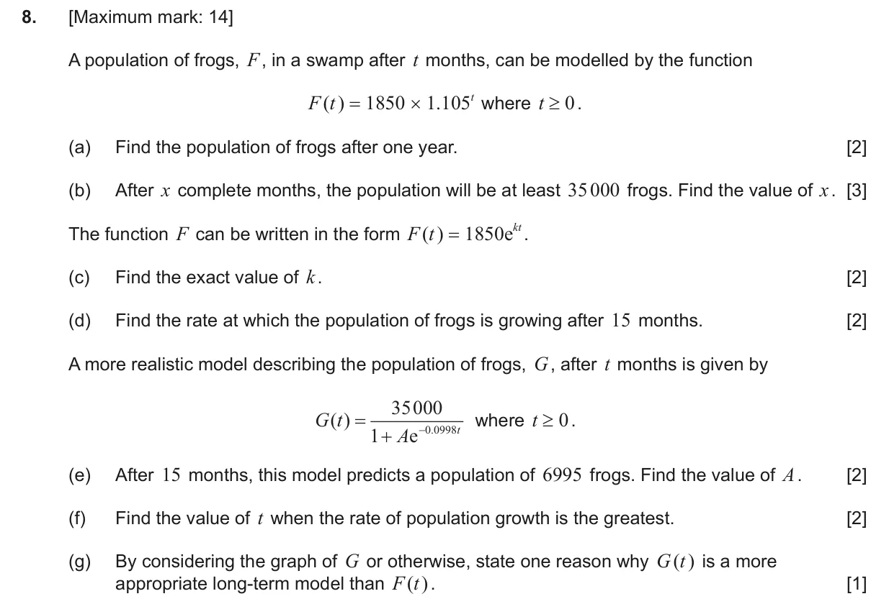
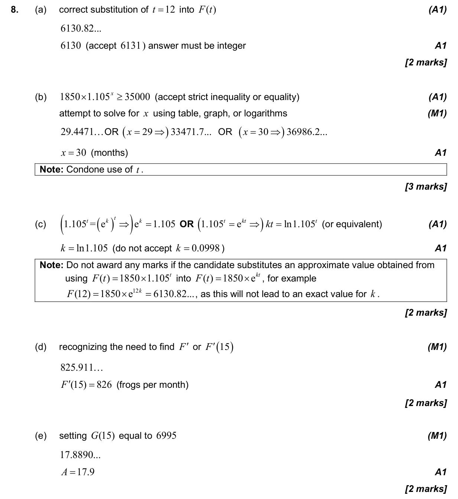
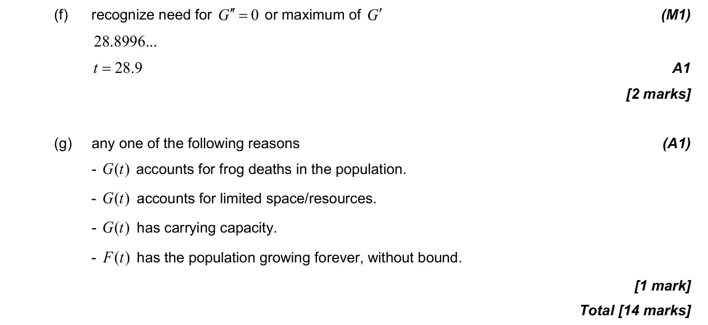

2.9 Exponential and logarithmic functions1.7 Laws of exponents and logarithms5.1 Introduction to calculus2.10 Solving equations graphically and analytically5.8 Optimization, local extrema and points of inflexion5.7 The second derivative
Question

Markscheme

